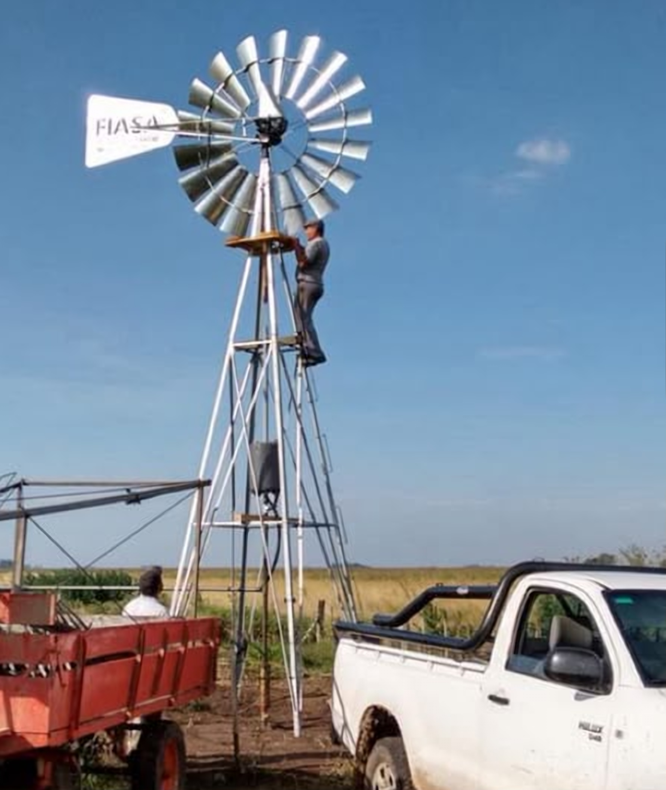

JULIÁN
ACEBAL
SERVICIOS RURALES · AGUA · ENERGÍA
SERVICIOS RURALES
JULIÁN
ACEBAL
Molinos de viento · Tanques
Paneles y bombas solares
Bebederos · Perforaciones
Movimientos de tierra
CONSULTAS Y PRESUPUESTOS
(2268)
518 941
(2268)
518 665
Escaneá y escribime
por WhatsApp